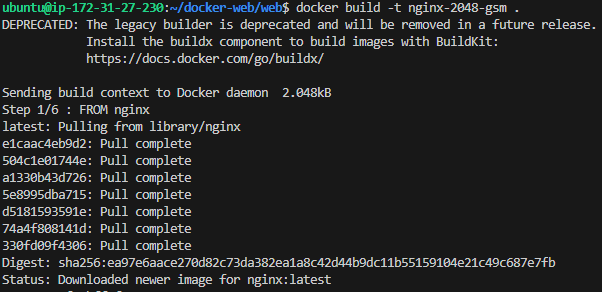
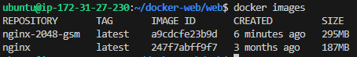
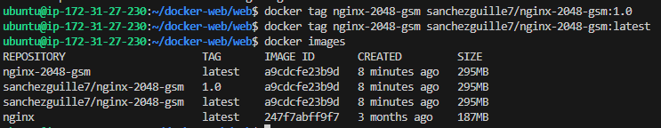
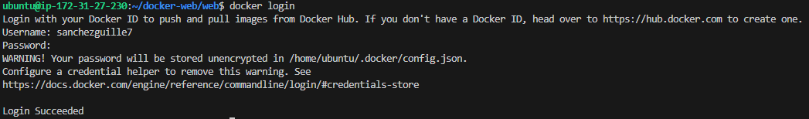
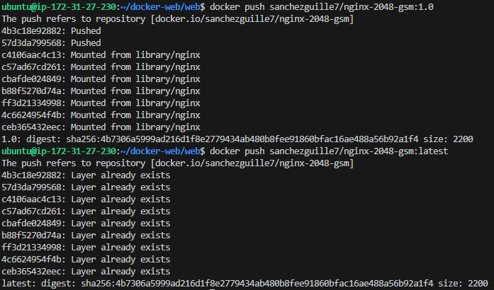
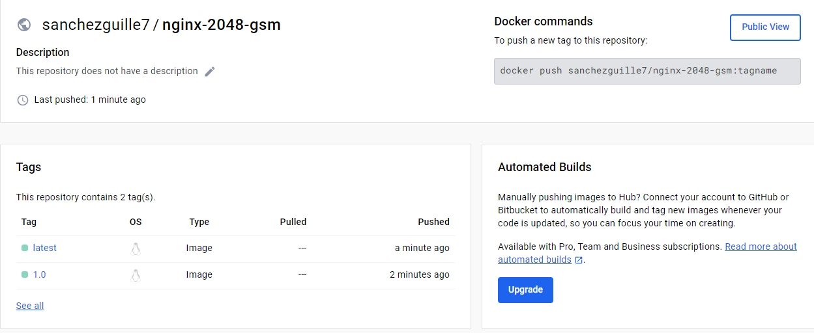
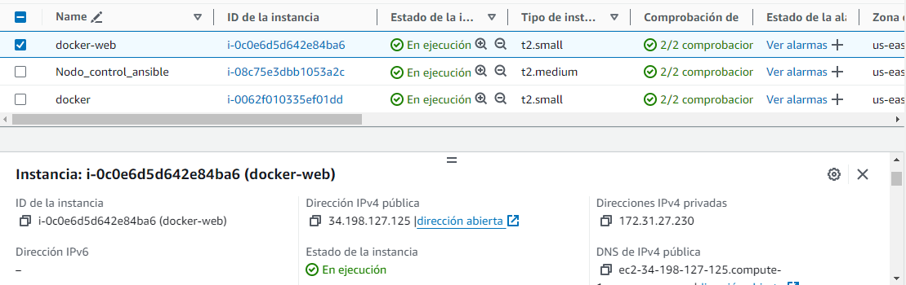
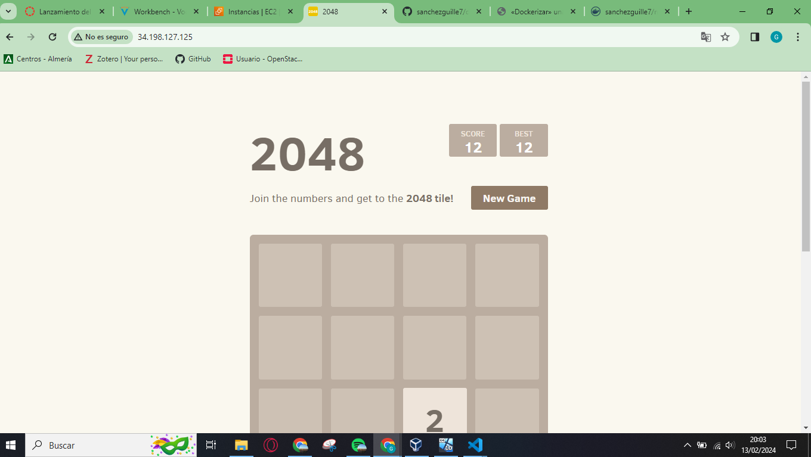
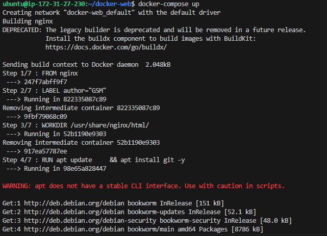

«Dockerizar» una web estática y publicarla en Docker Hub
En esta práctica, he tenido que crear un archivo Dockerfile para generar una imagen Docker que incluya una aplicación web estática. Luego, la publico en Docker Hub y realizo la implementación del sitio web en Amazon Web Services (AWS) utilizando contenedores Docker y Docker Compose.
Requisitos del archivo Dockerfile
Debo crear un archivo Dockerfile que cumpla con los siguientes requisitos:
- Utilizar la última versión de nginx como imagen base.
- Instalar el software necesario para clonar el repositorio de GitHub que contiene la aplicación web estática.
- Clonar el repositorio de GitHub que contiene la aplicación web estática en el directorio
/usr/share/nginx/html/, que es el directorio por defecto utilizado por Nginx para servir contenido. - Utilizar el puerto 80 para ejecutar el servicio de Nginx dentro de la imagen.
- Ejecutar el comando
nginx -g 'daemon off;'al iniciar el contenedor.
Creación de la imagen Docker a partir del archivo Dockerfile
Para crear la imagen de Docker a partir del archivo Dockerfile deberá ejecutar el siguiente comando.
docker build -t nginx-2048-gsm .

Comprobacion:

Para publicar la imagen en Docker Hub es necesario que en el nombre de la imagen aparezca nuestro nombre de usuario de Docker Hub. En mi caso: sanchezguille7/nginx-2048-gsm. Le añadimos etiquetas o tags:
docker tag nginx-2048-gsm sanchezguille7/nginx-2048-gsm:1.0
docker tag nginx-2048-gsm sanchezguille7/nginx-2048-gsm:latest

Publicar la imagen en Docker Hub
Una vez que le hemos asignado un nombre correcto a la imagen y le hemos añadido las etiquetas, podemos publicarla en Docker Hub.
Lo primero que tenemos que hacer es iniciar sesión en Docker Hub desde nuestra instancia de AWS con el comando donde pondremos nuestros credenciales de Docker Hub:
docker login

Para publicar la imagen con las dos etiquetas que hemos creado:
docker push sanchezguille7/nginx-2048-gsm:1.0
docker push sanchezguille7/nginx-2048-gsm:latest

Se puede comprobar la creación en mi perfil de Docker Hub(si pinchas en la imagen te lleva directamente):
 ( https://hub.docker.com/repository/docker/sanchezguille7/nginx-2048-gsm/general )
Comprobacion de que funciona
IP elastica de mi máquina de AWS:

Pagina web estática:

Comando para lanzarlo:
